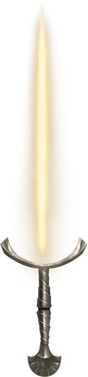

Солнечный клинок
Sun Blade
Оружие (Длинный меч), редкое (требуется настройка)

Рекомендованная стоимость 4 000 ЗМ
Этот предмет выглядит как рукоять меча.
Сияющий клинок. Держа рукоять в руке, вы можете Бонусным действием призвать клинок чистого сияния или вернуть его в небытие. Пока клинок сияет, это магическое оружие считается Длинным мечом со свойством Фехтовальное. Если вы владеете Длинными или Короткими мечами, вы владеете и Солнечным клинком. Вы обладаете бонусом +2 к броскам атаки и урона, совершаемым с этим оружием; кроме того, оно наносит не Рубящий урон, а урон Излучением. Когда вы попадаете по Нежити атакой этим оружием, она получает 1к8 дополнительного урона Излучением.
Солнечный свет. Сияющий клинок этого меча испускает Яркий свет в радиусе 15 футов и Тусклый свет ещё на 15 футов. Этот свет считается солнечным светом. Пока клинок сияет, вы можете действием Магия уменьшить или увеличить оба радиуса, как Тусклого, так и Яркого света, но каждый радиус может быть не более 30 футов и не меньше 10 футов.